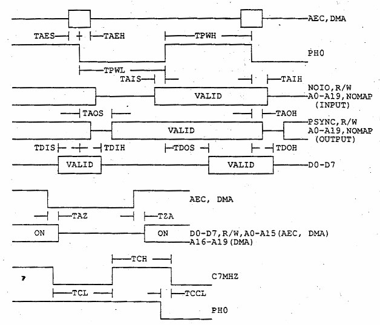

| System Specification for C65 | Fred Bowen | March 1, 1991 |

| Param | Description | MIN | TYP | MAX |
|---|---|---|---|---|
| Tpwh | PH0 clock high time | 65 | 135 | - |
| Tpwl | PH0 clock low time | 65 | 135 | - |
| Taes | AEC, DMA setup to PH0 falling | 30 | - | - |
| Taeh | AEC, DMA hold from PH0 falling | 10 | - | - |
| Tais | address input setup to PH0 rising | 20 | - | - |
| Taih | address input hold from PH0 falling | 10 | - | - |
| Taos | address output setup from PH0 falling | - | - | 50 |
| Taoh | address output hold from PH0 falling | 15 | - | - |
| Tdis | data input setup to PH0 falling | 40 | - | - |
| Tdih | data input hold from PH0 falling data | 10 | - | - |
| Tdos | output setup from PH0 rising | - | - | 50 |
| Tdoh | data output hold from PH0 falling | 30 | - | - |
| Taz | address off from AEC or DMA falling | 0 | 15 | 20 |
| Tza | address on from AEC and DMA rising | 15 | - | 30 |
| Tch | C7MHZ clock high time | 65 | - | - |
| Tcl | C7MHZ clock low time | 65 | - | - |
| Tccl | C7MHZ delay from PH0 | 0 | - | 50 |
| This page has been created by Sami Rautiainen. | |
| Read the small print. | Last updated May 09, 2002. |